Jogos de anatomia
Identifique órgãos, músculos, ossos e estruturas anatômicas através de desafios interativos.
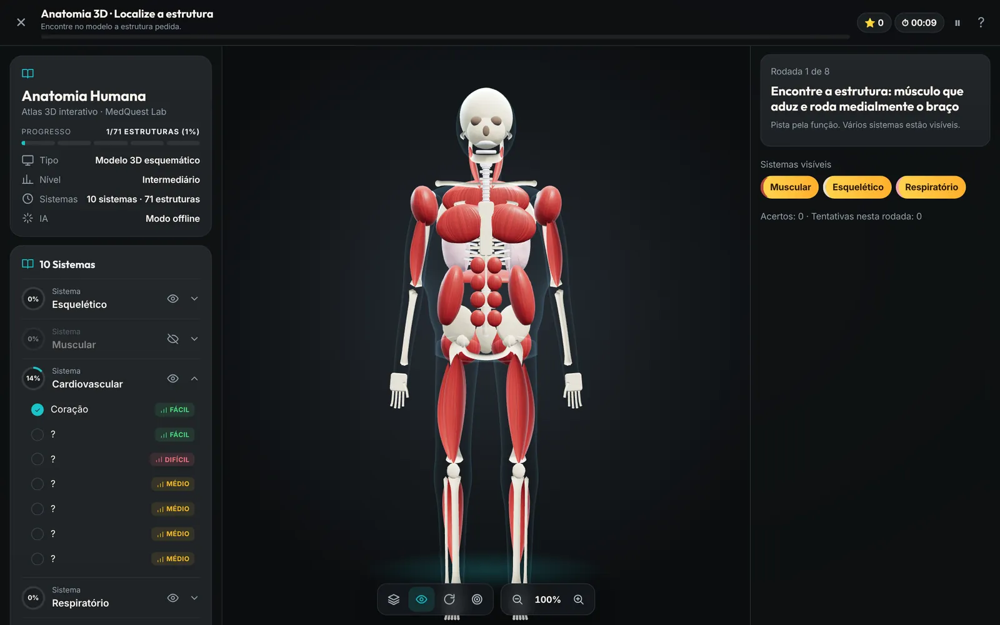
Transforme suas matérias em jogos, desafios interativos e simulações médicas em 3D para memorizar conteúdos, otimizar seus estudos e chegar mais preparado às provas.
Acesso imediato • Estude de onde estiver • Garantia de 7 dias
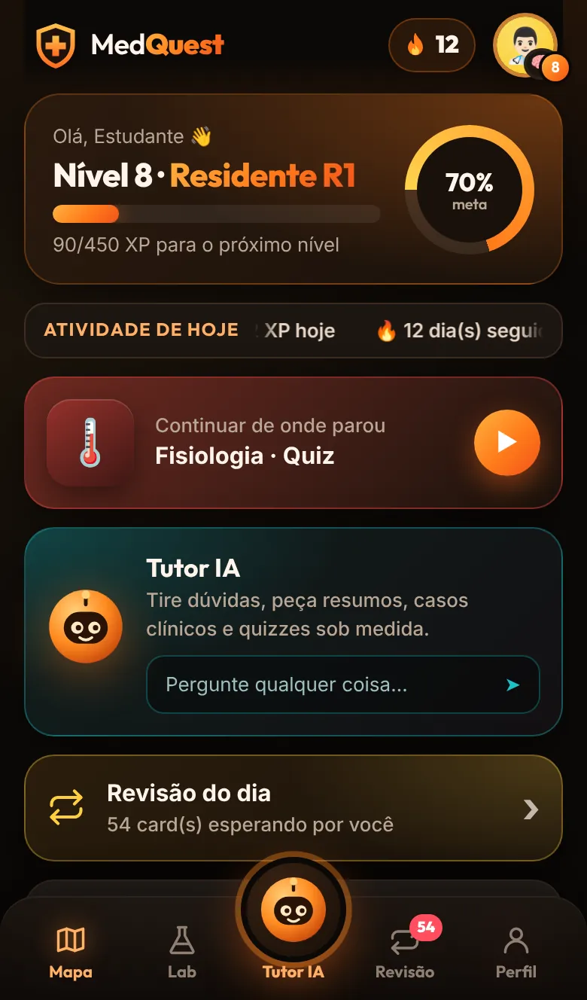
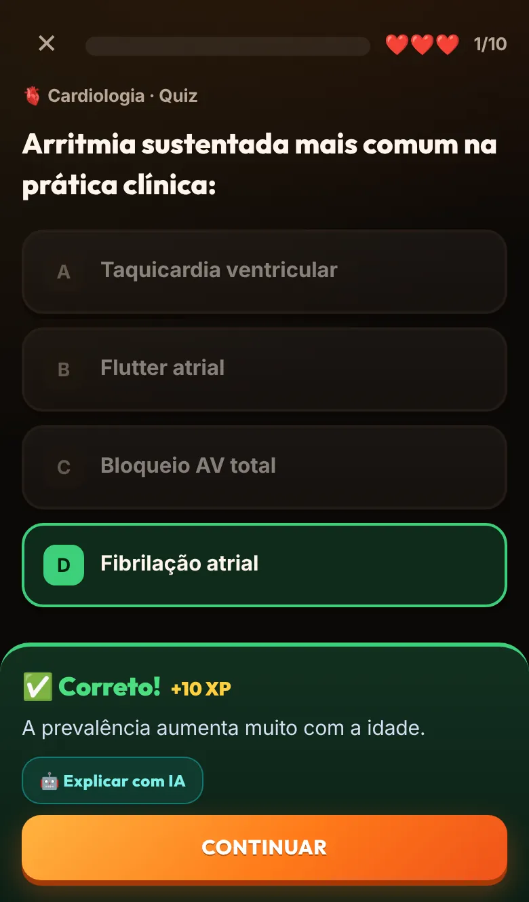
Telas reais do aplicativo, com dados de exemplo.
Conheça o MedQuest, a plataforma que transforma conteúdos complexos de medicina em experiências interativas de aprendizado.
Identifique órgãos, músculos, ossos e estruturas anatômicas através de desafios interativos.

Teste seus conhecimentos em diferentes matérias da graduação e descubra quais conteúdos precisa reforçar.
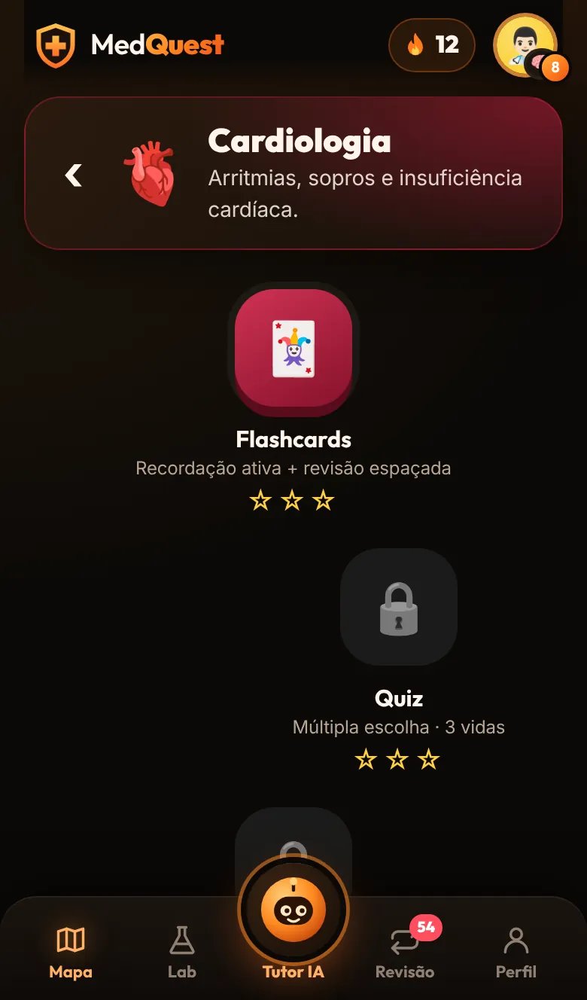
Memorize conceitos importantes através da recuperação ativa e da repetição espaçada.
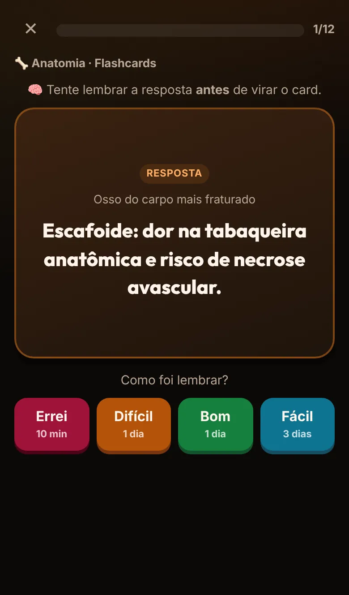
Relacione estruturas, funções, doenças e conceitos médicos de maneira dinâmica.
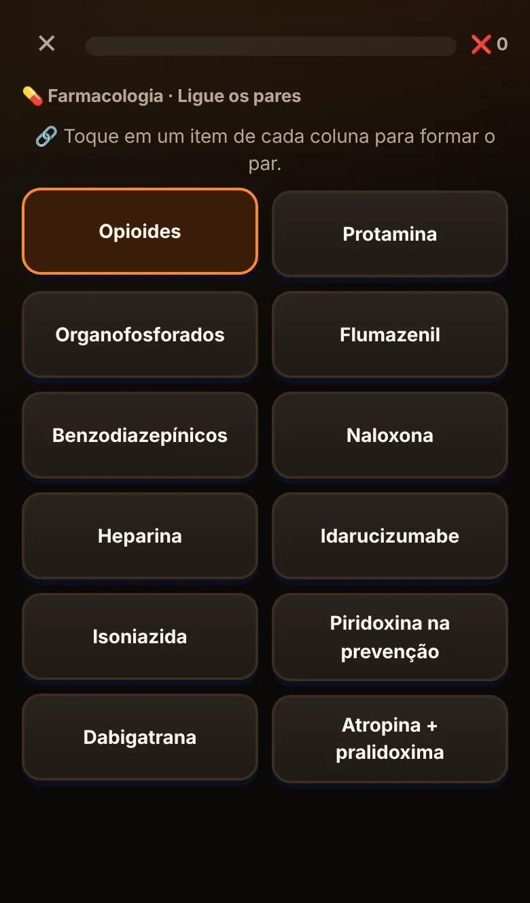
Complete desafios diários, acumule experiência e mantenha uma rotina de revisão.
Identifique suas dificuldades e pratique novamente os conteúdos em que errou.
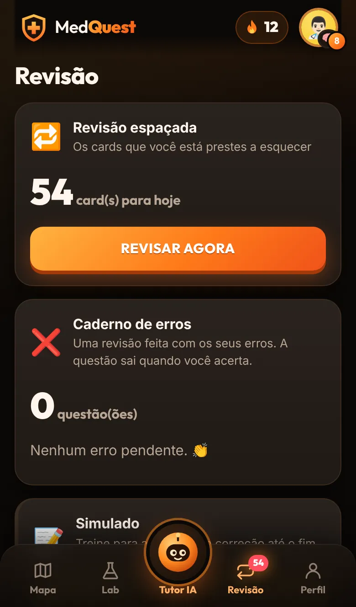
Investigue situações fictícias, interprete informações e desenvolva seu raciocínio clínico.
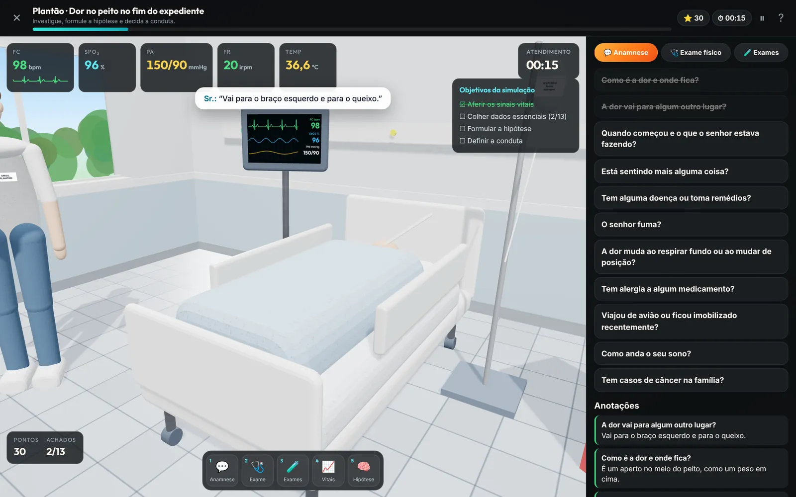
Ganhe XP, conquiste medalhas, suba de nível e acompanhe seu progresso acadêmico.
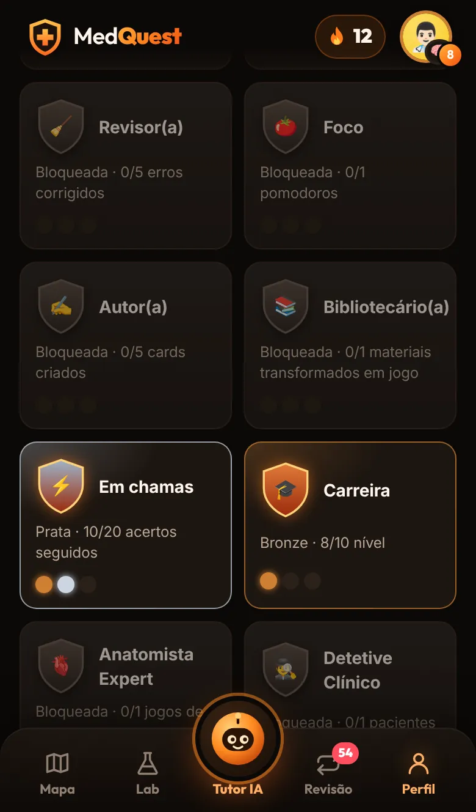
Explore estruturas anatômicas, investigue casos clínicos, identifique erros e participe de simulações educacionais em 3D.
Explore o corpo humano, visualize sistemas e identifique estruturas anatômicas de diferentes ângulos.
Explore ambientes hospitalares virtuais e identifique situações incorretas.
7 ambientes: centro cirúrgico, enfermaria, UTI, pronto-socorro, laboratório, consultório e sala de procedimentosInvestigue casos fictícios, analise informações clínicas e responda aos desafios apresentados.
7 casos com anamnese, exame físico, exames, hipótese e condutaExplore lâminas, tecidos, células e conceitos microscópicos em experiências interativas.
Objetivas de 4x a 100x, foco, luz e óleo de imersão; lâminas ilustrativas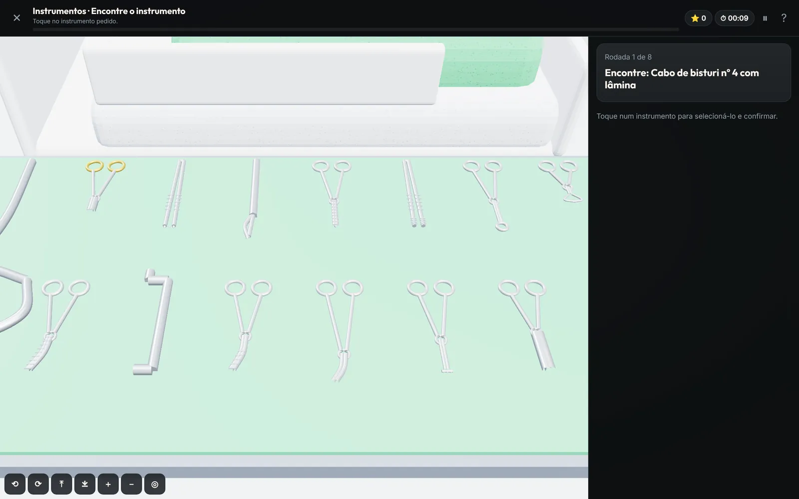
Reconheça instrumentos e conceitos relacionados ao ambiente cirúrgico.
17 instrumentos, montagem da mesa e checklist de cirurgia segura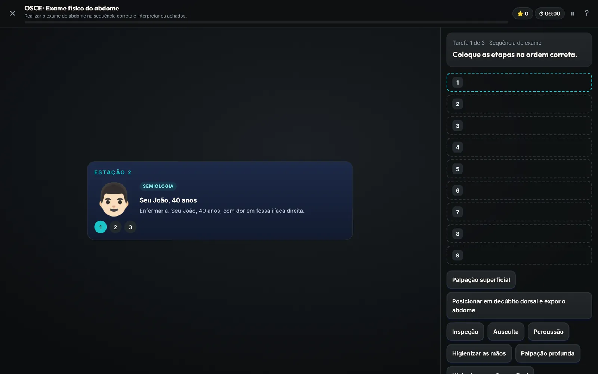
Complete estações virtuais inspiradas em avaliações práticas da graduação.
8 estações no formato OSCE, com tempo e checklist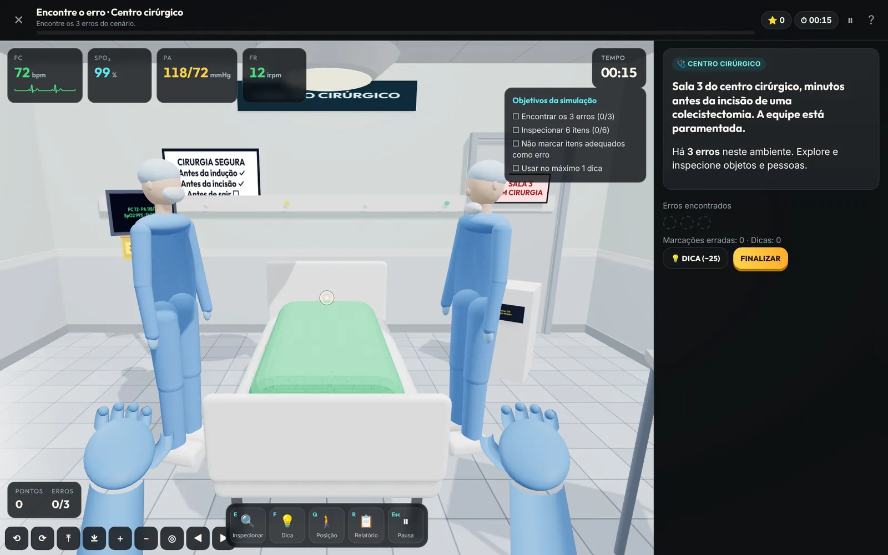
Do iniciante ao avançado, cada simulação muda de complexidade, de tempo e de pistas.
Os erros viram cards de revisão automaticamenteAs simulações são recursos educacionais complementares, com casos fictícios e modelos esquemáticos. Elas não substituem aulas práticas nem o treinamento clínico supervisionado.
Estudar medicina já é desafiador. Sua forma de estudar não precisa tornar tudo ainda mais complicado.
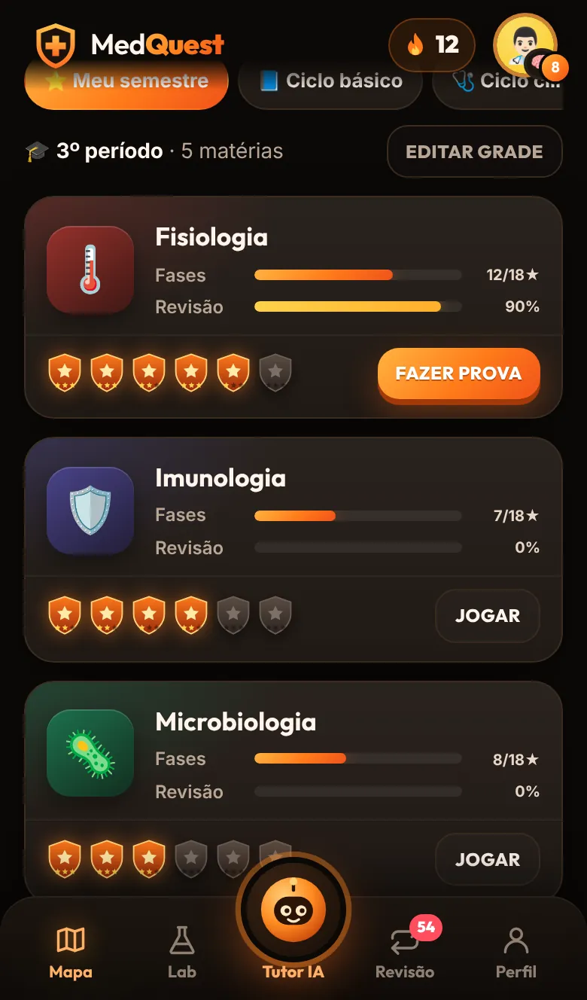
Selecione o conteúdo que deseja estudar. O app já mostra as matérias do seu semestre.
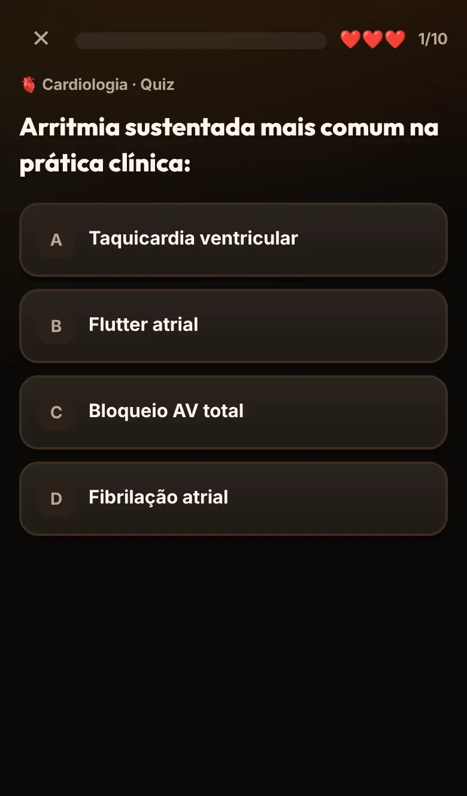
Complete desafios, explore simulações e teste seus conhecimentos.
Ganhe experiência, revise seus erros e acompanhe seu progresso.
Três questões de anatomia do banco do MedQuest. Responda e veja a explicação.
28 disciplinas e 1.762 itens de estudo entre flashcards, questões, pares, sequências e casos clínicos. Toque em uma disciplina para ver os modos de jogo.
Recursos incluídos no plano anual, já disponíveis dentro do app.
Escolha o plano ideal para sua rotina e desbloqueie sua experiência no MedQuest.
Garanta 12 meses de acesso por R$ 97 antes que sua oferta expire.
R$ 29,90/mês
Cobrança mensal recorrente
De R$ 127,00 por
R$ 97,00/ano
Equivale a R$ 8,08 por mês, com cobrança anual
Economize 73% em comparação com 12 mensalidades
Pagamento processado pela plataforma de pagamento parceira. Você recebe o acesso no e-mail informado assim que o pagamento for confirmado.
Você terá 7 dias para explorar a plataforma, experimentar os jogos e conhecer uma nova forma de estudar medicina.
Caso não fique satisfeito, poderá solicitar o reembolso dentro do período de garantia, conforme as condições informadas na contratação.
Explore, jogue, revise e evolua com o MedQuest.
Quero estudar jogando